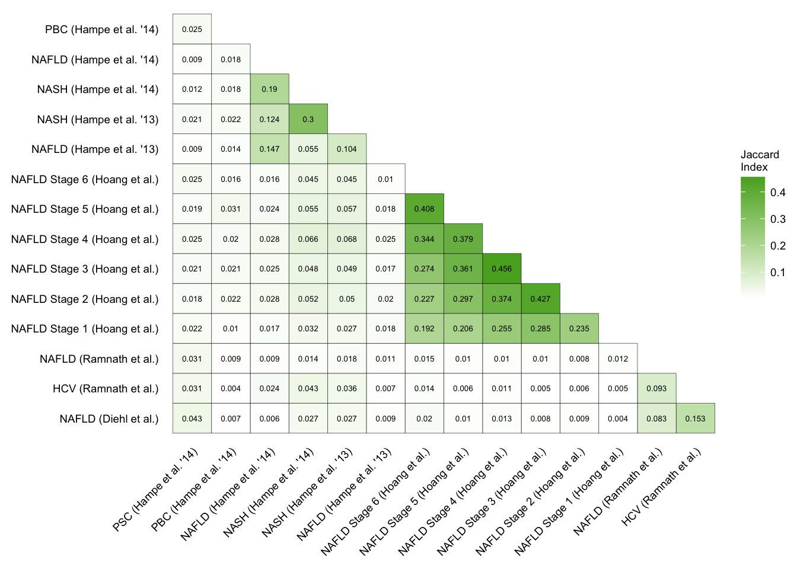
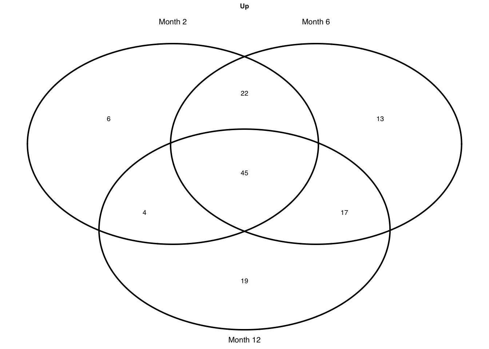
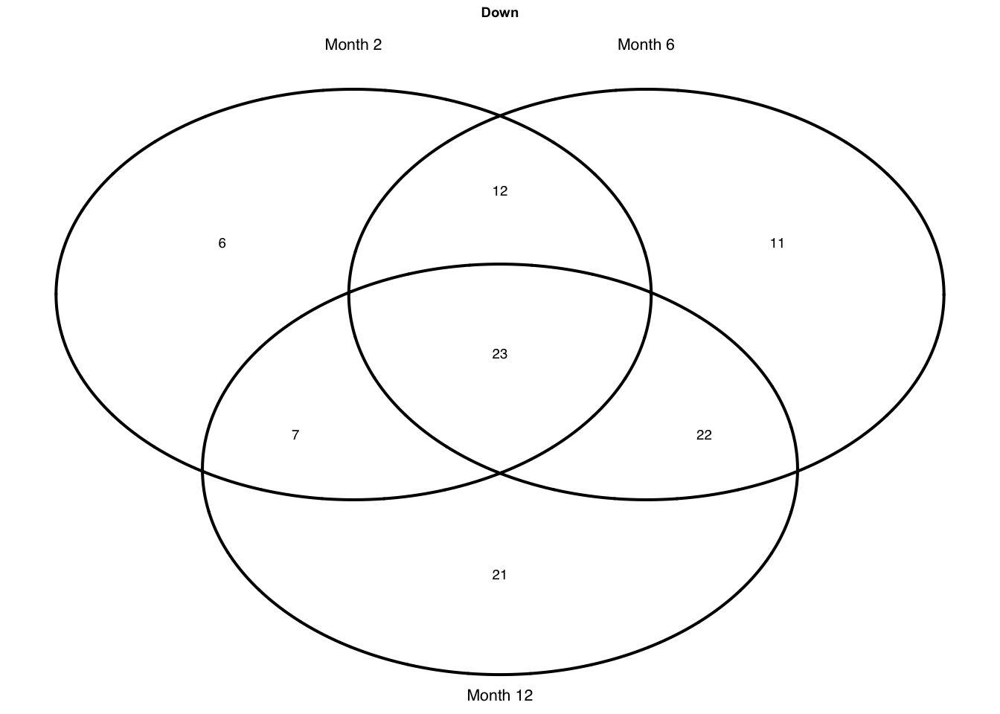
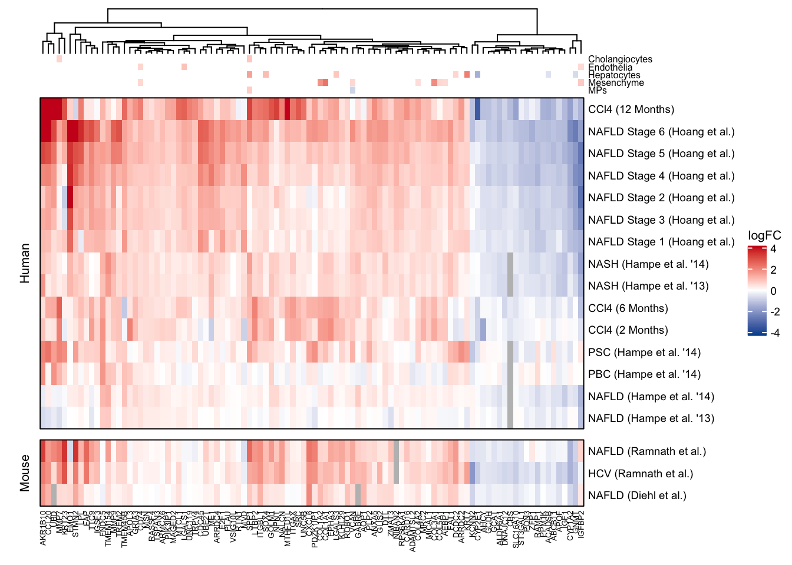
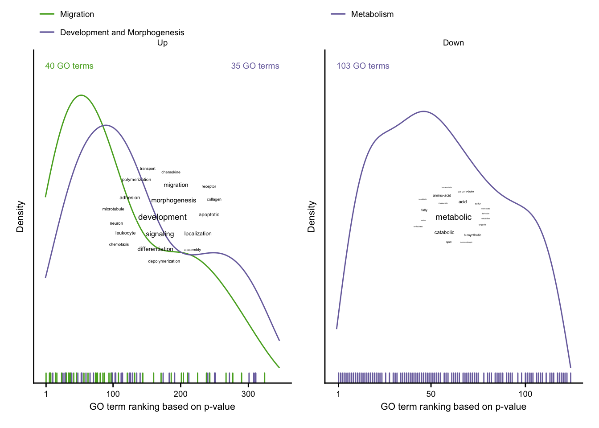
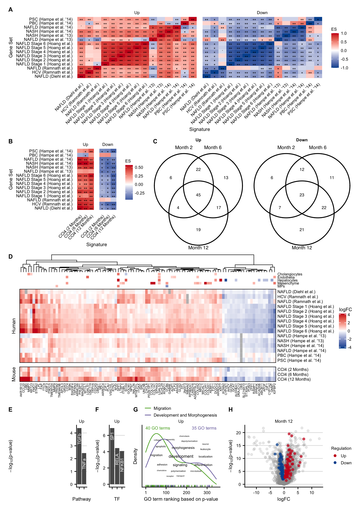
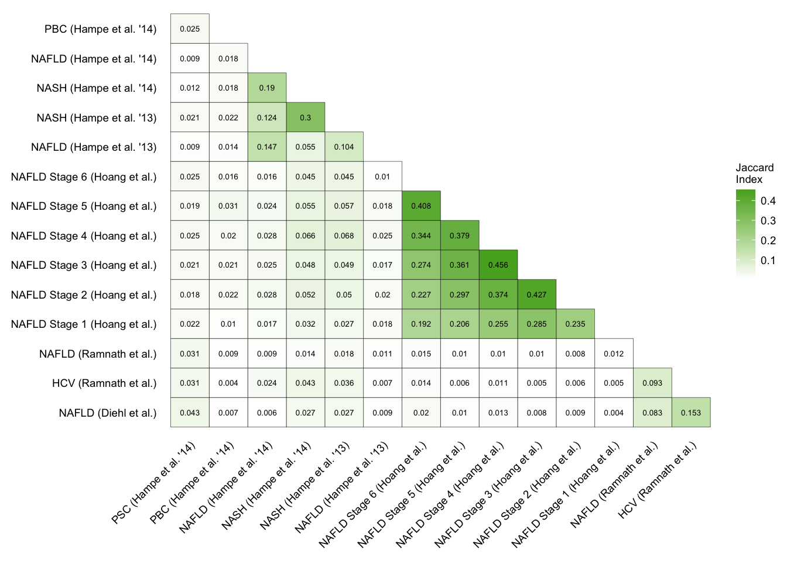
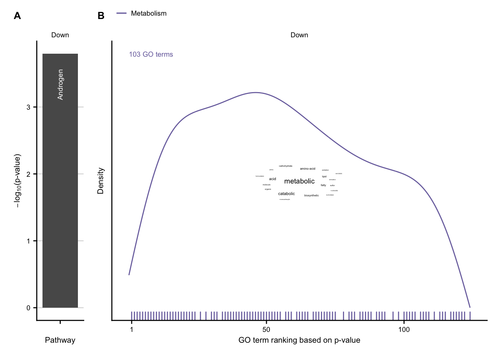

Mouse vs. Human (Fig. 4)
Last updated: 2021-01-07
Checks: 7 0
Knit directory: meta-liver/
This reproducible R Markdown analysis was created with workflowr (version 1.6.2). The Checks tab describes the reproducibility checks that were applied when the results were created. The Past versions tab lists the development history.
Great! Since the R Markdown file has been committed to the Git repository, you know the exact version of the code that produced these results.
Great job! The global environment was empty. Objects defined in the global environment can affect the analysis in your R Markdown file in unknown ways. For reproduciblity it’s best to always run the code in an empty environment.
The command set.seed(20201218) was run prior to running the code in the R Markdown file. Setting a seed ensures that any results that rely on randomness, e.g. subsampling or permutations, are reproducible.
Great job! Recording the operating system, R version, and package versions is critical for reproducibility.
Nice! There were no cached chunks for this analysis, so you can be confident that you successfully produced the results during this run.
Great job! Using relative paths to the files within your workflowr project makes it easier to run your code on other machines.
Great! You are using Git for version control. Tracking code development and connecting the code version to the results is critical for reproducibility.
The results in this page were generated with repository version e6ada13. See the Past versions tab to see a history of the changes made to the R Markdown and HTML files.
Note that you need to be careful to ensure that all relevant files for the analysis have been committed to Git prior to generating the results (you can use wflow_publish or wflow_git_commit). workflowr only checks the R Markdown file, but you know if there are other scripts or data files that it depends on. Below is the status of the Git repository when the results were generated:
Ignored files:
Ignored: .DS_Store
Ignored: .Rhistory
Ignored: .Rproj.user/
Ignored: analysis/human-diehl-nafld_cache/
Ignored: analysis/human-hampe13-nash_cache/
Ignored: analysis/human-hampe14-misc_cache/
Ignored: analysis/human-hoang-nafld_cache/
Ignored: analysis/human-ramnath-fibrosis_cache/
Ignored: analysis/meta-chronic-vs-acute_cache/
Ignored: analysis/meta-mouse-vs-human_cache/
Ignored: analysis/mouse-acute-apap_cache/
Ignored: analysis/mouse-acute-bdl_cache/
Ignored: analysis/mouse-acute-ccl4_cache/
Ignored: analysis/mouse-acute-lps_cache/
Ignored: analysis/mouse-acute-ph_cache/
Ignored: analysis/mouse-acute-tunicamycin_cache/
Ignored: analysis/mouse-chronic-ccl4_cache/
Ignored: analysis/plot-acute-apap_cache/
Ignored: analysis/plot-acute-bdl_cache/
Ignored: analysis/plot-acute-ccl4_cache/
Ignored: analysis/plot-acute-ph_cache/
Ignored: analysis/plot-chronic-ccl4_cache/
Ignored: analysis/plot-chronic-vs-acute_cache/
Ignored: analysis/plot-precision-recall_cache/
Ignored: analysis/plot-study-overview_cache/
Ignored: analysis/plot-teufel-integration_cache/
Ignored: code/.DS_Store
Ignored: code/README.html
Ignored: code/meta-mouse-vs-human/.DS_Store
Ignored: data/.DS_Store
Ignored: data/README.html
Ignored: data/annotation/
Ignored: data/human-diehl-nafld/
Ignored: data/human-hampe13-nash/
Ignored: data/human-hampe14-misc/
Ignored: data/human-hoang-nafld/
Ignored: data/human-ramnath-fibrosis/
Ignored: data/meta-chronic-vs-acute/
Ignored: data/meta-mouse-vs-human/
Ignored: data/mouse-acute-apap/
Ignored: data/mouse-acute-bdl/
Ignored: data/mouse-acute-ccl4/
Ignored: data/mouse-acute-lps/
Ignored: data/mouse-acute-ph/
Ignored: data/mouse-acute-tunicamycin/
Ignored: data/mouse-chronic-ccl4/
Ignored: external_software/.DS_Store
Ignored: external_software/README.html
Ignored: external_software/stem/.DS_Store
Ignored: figures/
Ignored: output/.DS_Store
Ignored: output/README.html
Ignored: output/human-diehl-nafld/
Ignored: output/human-hampe13-nash/
Ignored: output/human-hampe14-misc/
Ignored: output/human-hoang-nafld/
Ignored: output/human-ramnath-fibrosis/
Ignored: output/meta-chronic-vs-acute/
Ignored: output/meta-mouse-vs-human/
Ignored: output/mouse-acute-apap/
Ignored: output/mouse-acute-bdl/
Ignored: output/mouse-acute-ccl4/
Ignored: output/mouse-acute-lps/
Ignored: output/mouse-acute-ph/
Ignored: output/mouse-acute-tunicamycin/
Ignored: output/mouse-chronic-ccl4/
Ignored: renv/library/
Ignored: renv/staging/
Ignored: tables/
Untracked files:
Untracked: analysis/save-tables.Rmd
Unstaged changes:
Modified: analysis/plot-precision-recall.Rmd
Modified: code/utils-plots.R
Note that any generated files, e.g. HTML, png, CSS, etc., are not included in this status report because it is ok for generated content to have uncommitted changes.
These are the previous versions of the repository in which changes were made to the R Markdown (analysis/plot-mouse-vs-human.Rmd) and HTML (docs/plot-mouse-vs-human.html) files. If you’ve configured a remote Git repository (see ?wflow_git_remote), click on the hyperlinks in the table below to view the files as they were in that past version.
| File | Version | Author | Date | Message |
|---|---|---|---|---|
| Rmd | e6ada13 | christianholland | 2021-01-07 | added example gsea plots |
| html | b4ed535 | christianholland | 2021-01-05 | Build site. |
| html | 3f4f82f | christianholland | 2021-01-05 | Build site. |
| Rmd | 1b1ab6a | christianholland | 2021-01-05 | cluster contrasts |
| html | 45c5848 | christianholland | 2020-12-30 | Build site. |
| Rmd | 26cc806 | christianholland | 2020-12-30 | changed sc cutoff to 0.25 |
| html | b43c246 | christianholland | 2020-12-29 | Build site. |
| Rmd | af35abe | christianholland | 2020-12-29 | minor changes |
| html | d8a06eb | christianholland | 2020-12-28 | Build site. |
| Rmd | e4603ab | christianholland | 2020-12-28 | Added script for fig 4 |
Introduction
Here we generate publication-ready plots for the comparison of the chronic CCl4 model and patient cohorts.
Libraries and sources
These libraries and sources are used for this analysis.
library(tidyverse)
library(tidylog)
library(here)
library(AachenColorPalette)
library(VennDiagram)
library(gridExtra)
library(ggpubr)
library(scales)
library(lemon)
library(ComplexHeatmap)
library(ggwordcloud)
library(circlize)
library(patchwork)
source(here("code/utils-plots.R"))
source(here("code/utils-utils.R"))Definition of global variables and functions that are used throughout this analysis.
# i/o
data_path <- "data/meta-mouse-vs-human"
output_path <- "output/meta-mouse-vs-human"
# graphical parameters
# fontsize
fz <- 7
# color function for heatmaps
col_fun <- colorRamp2(
c(-4, 0, 4),
c(aachen_color("blue"), "white", aachen_color("red"))
)
# keys to annotate contrasts
key_mm <- readRDS(here("data/meta-chronic-vs-acute/contrast_annotation.rds"))
key_hs <- readRDS(here("data/meta-mouse-vs-human/contrast_annotation.rds"))Similarity of patient cohort gene sets
keys <- key_hs %>%
distinct(contrast, label, source, phenotype)
j <- readRDS(here(output_path, "gene_set_similarity.rds")) %>%
separate(set1, into = c("source", "phenotype", "contrast"), sep = "-") %>%
inner_join(keys, by = c("contrast", "source", "phenotype")) %>%
select(-source, -phenotype, -contrast) %>%
rename(set1 = label) %>%
separate(set2, into = c("source", "phenotype", "contrast"), sep = "-") %>%
inner_join(keys, by = c("contrast", "source", "phenotype")) %>%
rename(set2 = label) %>%
select(set1, set2, similarity)
patient_gs_sim <- j %>%
mutate(set1 = fct_rev(set1)) %>%
ggplot(aes(
x = set1, y = set2, fill = similarity,
label = round(similarity, 3)
)) +
geom_tile(color = "black") +
scale_fill_gradient(low = "white", high = aachen_color("green")) +
labs(x = NULL, y = NULL, fill = "Jaccard\nIndex") +
theme(
axis.text.x = element_text(angle = 45, hjust = 1),
axis.line = element_blank(),
axis.ticks = element_blank()
) +
theme(axis.text.x = element_text(angle = 45, hjust = 1)) +
geom_text(size = (fz - 2) / (14 / 5)) +
my_theme(fsize = fz, grid = "no")
patient_gs_sim
| Version | Author | Date |
|---|---|---|
| d8a06eb | christianholland | 2020-12-28 |
Interstudy enrichment of patient cohorts
keys <- key_hs %>%
distinct(contrast, label, source, phenotype)
gsea_res <- readRDS(here(output_path, "interstudy_enrichment.rds")) %>%
separate(signature,
into = c("source", "phenotype", "contrast"),
sep = "-"
) %>%
inner_join(keys, by = c("contrast", "source", "phenotype")) %>%
select(-source, -phenotype, -contrast) %>%
rename(signature = label) %>%
separate(geneset, into = c("source", "phenotype", "contrast"), sep = "-") %>%
inner_join(keys, by = c("contrast", "source", "phenotype")) %>%
rename(geneset = label)
patient_interstudy_enrichment <- gsea_res %>%
mutate(direction = fct_rev(str_to_title(direction))) %>%
mutate(label = gtools::stars.pval(padj)) %>%
ggplot(aes(x = signature, y = geneset, fill = ES)) +
geom_tile() +
geom_text(aes(label = label), size = fz / (14 / 5), vjust = 1) +
facet_wrap(~direction, ncol = 2) +
theme(
axis.text.x = element_text(angle = 45, hjust = 1),
axis.line = element_blank(),
axis.ticks = element_blank()
) +
scale_fill_gradient2(
low = aachen_color("blue"), mid = "white",
high = aachen_color("red")
) +
my_theme(grid = "no", fsize = fz) +
labs(x = "Signature", y = "Gene Set", fill = "ES") +
guides(fill = guide_colorbar(title = "ES"))
patient_interstudy_enrichment
| Version | Author | Date |
|---|---|---|
| d8a06eb | christianholland | 2020-12-28 |
Mouse enrichment in patients
contrast_keys_mouse <- key_mm %>%
distinct(signature = contrast, label2)
contrast_keys_human <- key_hs %>%
unite(geneset, source, phenotype, contrast, sep = "-") %>%
distinct(geneset, label)
gsea_res <- readRDS(here(output_path, "gsea_res.rds")) %>%
inner_join(contrast_keys_mouse, by = "signature") %>%
select(-signature) %>%
rename(signature = label2) %>%
inner_join(contrast_keys_human, by = "geneset") %>%
select(-geneset) %>%
rename(geneset = label) %>%
mutate(
label = gtools::stars.pval(padj),
direction = fct_rev(str_to_title(direction))
)
mm_enrichment_in_hs <- gsea_res %>%
ggplot(aes(x = signature, y = geneset, fill = ES, label = label)) +
geom_tile() +
facet_wrap(~direction) +
scale_fill_gradient2(
low = aachen_color("blue"), mid = "white",
high = aachen_color("red")
) +
my_theme(grid = "no", fsize = fz) +
theme(
axis.text.x = element_text(angle = 45, hjust = 1),
axis.line = element_blank(),
axis.ticks = element_blank()
) +
geom_text(size = fz / (14 / 5), vjust = 1) +
labs(x = "Signature", y = "Gene Set")
mm_enrichment_in_hs
| Version | Author | Date |
|---|---|---|
| d8a06eb | christianholland | 2020-12-28 |
Overlap of leading-edge genes
keys <- key_mm %>%
distinct(signature = contrast, class = time_label2)
le <- readRDS(here(output_path, "leading_edges.rds")) %>%
inner_join(keys, by = "signature") %>%
rename(regulation = direction) %>%
arrange(class)
tables <- le %>%
group_split(class)
# extract labellers
c1 <- tables[[1]] %>%
distinct(class) %>%
pull() %>%
as.character()
c2 <- tables[[2]] %>%
distinct(class) %>%
pull() %>%
as.character()
c3 <- tables[[3]] %>%
distinct(class) %>%
pull() %>%
as.character()
t1 <- tables[[1]] %>% count(regulation)
t2 <- tables[[2]] %>% count(regulation)
t3 <- tables[[3]] %>% count(regulation)
le_overlap_plots <- c("up", "down") %>%
map(function(r) {
# set sizes of regulated genes
a1 <- t1 %>%
filter(regulation == r) %>%
pull(n)
a2 <- t2 %>%
filter(regulation == r) %>%
pull(n)
a3 <- t3 %>%
filter(regulation == r) %>%
pull(n)
a12 <- purrr::reduce(
list(
tables[[1]] %>% filter(regulation == r) %>% pull(gene),
tables[[2]] %>% filter(regulation == r) %>% pull(gene)
),
intersect
) %>%
length()
a23 <- purrr::reduce(
list(
tables[[2]] %>% filter(regulation == r) %>% pull(gene),
tables[[3]] %>% filter(regulation == r) %>% pull(gene)
),
intersect
) %>%
length()
a13 <- purrr::reduce(
list(
tables[[1]] %>% filter(regulation == r) %>% pull(gene),
tables[[3]] %>% filter(regulation == r) %>% pull(gene)
),
intersect
) %>%
length()
a123 <- purrr::reduce(
list(
tables[[1]] %>% filter(regulation == r) %>% pull(gene),
tables[[2]] %>% filter(regulation == r) %>% pull(gene),
tables[[3]] %>% filter(regulation == r) %>% pull(gene)
),
intersect
) %>%
length()
grid.newpage()
grid.grabExpr(draw.triple.venn(
area1 = a1, area2 = a2, area3 = a3,
n12 = a12, n23 = a23, n13 = a13,
n123 = a123,
category = c(c1, c2, c3),
# lty = "blank",
cex = 1 / 12 * fz,
fontfamily = rep("sans", 7),
# fill = aachen_color(c("purple", "petrol", "red")),
# cat.col = aachen_color(c("purple", "petrol", "red")),
cat.cex = 1 / 12 * (fz + 1),
cat.fontfamily = rep("sans", 3),
cat.pos = c(0, 0, 180),
cat.prompts = T
)) %>%
as_ggplot() %>%
grid.arrange(top = textGrob(str_to_title(r), gp = gpar(
fontsize = fz,
fontface = "bold"
)))
})
| Version | Author | Date |
|---|---|---|
| d8a06eb | christianholland | 2020-12-28 |

| Version | Author | Date |
|---|---|---|
| d8a06eb | christianholland | 2020-12-28 |
le_gene_overlap <- wrap_plots(le_overlap_plots)Top human-mouse consistent genes
Heatmap
contrast_keys_human <- key_hs %>%
unite(contrast, source, phenotype, contrast, sep = "-") %>%
distinct(contrast, label)
contrast_keys_mouse <- key_mm %>%
filter(str_detect(contrast, "pure")) %>%
distinct(contrast, label)
keys <- bind_rows(contrast_keys_mouse, contrast_keys_human)
# load consistent genes
df <- readRDS(here(output_path, "consistent_genes.rds"))
# extract top 100 consistent genes
top_genes_df <- df %>%
filter(rank <= 100) %>%
inner_join(keys, by = "contrast") %>%
mutate(label = fct_drop(label))
# build matrix for heatmap
m <- top_genes_df %>%
distinct(gene, label, logFC) %>%
spread(label, logFC) %>%
data.frame(row.names = 1, check.names = F) %>%
as.matrix()
# build cell type annotation
celltype_anno <- top_genes_df %>%
distinct(gene, celltype, adjusted_logfc) %>%
spread(celltype, adjusted_logfc, fill = 0) %>%
data.frame(row.names = 1, check.names = F) %>%
select(-Unknown)
col_fun_anno <- colorRamp2(
c(-1.5, 0, 1.5),
c(aachen_color("blue"), "white", aachen_color("red"))
)
ha <- HeatmapAnnotation(
df = celltype_anno,
show_legend = F,
border = F,
gap = unit(0.25, "mm"),
col = list(
MPs = col_fun_anno, pDCs = col_fun_anno, ILCs = col_fun_anno,
Tcells = col_fun_anno, Bcells = col_fun_anno,
`Plasma Bcells` = col_fun_anno, `Mast cells` = col_fun_anno,
Endothelia = col_fun_anno, Mesenchyme = col_fun_anno,
Mesothelia = col_fun_anno, Hepatocytes = col_fun_anno,
Cholangiocytes = col_fun_anno
),
annotation_name_gp = gpar(fontsize = fz - 1),
simple_anno_size = unit(0.15, "cm")
)
# build heatmap
h_hmap <- Heatmap(
t(as.matrix(m)),
col = col_fun,
cluster_rows = T,
cluster_columns = T,
show_row_dend = F,
show_column_dend = T,
row_names_gp = gpar(fontsize = fz), column_names_gp = gpar(fontsize = fz - 2),
name = "logFC",
heatmap_legend_param = list(
title_gp = gpar(
fontface = "plain",
fontsize = fz + 1
),
labels_gp = gpar(fontsize = fz)
),
row_gap = unit(2.5, "mm"),
border = T,
top_annotation = ha,
row_split = c(rep("Mouse", 3), rep("Human", 15)),
row_title_gp = gpar(fontsize = fz + 1),
)
h_hmap
Characteriatzion via TFs
ora_res <- readRDS(here(
output_path,
"leading_edges_characterization.rds"
)) %>%
filter(group %in% c("dorothea") & fdr <= 0.2) %>%
mutate(regulation = str_to_title(regulation))
tfs_up <- ora_res %>%
filter(regulation == "Up") %>%
filter(geneset %in% c("SP1", "RELA", "NFKB1")) %>%
ggplot(aes(x = fct_reorder(geneset, p.value), y = -log10(p.value))) +
geom_col() +
geom_text(aes(label = geneset),
color = "white", angle = 90, hjust = 1.5,
size = fz / (14 / 5)
) +
theme(axis.text.x = element_blank()) +
labs(x = "TF", y = expression(-log["10"] * "(p-value)")) +
my_theme(grid = "y", fsize = fz) +
facet_rep_wrap(~regulation)
# no significant hits
# tfs_down <- ora_res %>%
# filter(regulation == "Down") %>%
# slice_min(order_by = p.value, n = 3) %>%
# ggplot(aes(x = fct_reorder(geneset, p.value), y = -log10(p.value))) +
# geom_col() +
# geom_text(aes(label = geneset),
# color = "white", angle = 90, hjust = 1.5,
# size = fz / (14 / 5)
# ) +
# theme(axis.text.x = element_blank()) +
# labs(x = "TF", y = expression(-log["10"] * "(p-value)")) +
# my_theme(grid = "y", fsize = fz) +
# facet_rep_wrap(~regulation)
tfs_up
| Version | Author | Date |
|---|---|---|
| d8a06eb | christianholland | 2020-12-28 |
Characteriatzion via pathways
ora_res <- readRDS(here(
output_path,
"leading_edges_characterization.rds"
)) %>%
filter(group %in% c("progeny") & fdr <= 0.2) %>%
mutate(regulation = str_to_title(regulation))
pw_up <- ora_res %>%
filter(regulation == "Up") %>%
filter(geneset %in% c("TGFb", "TNFa")) %>%
ggplot(aes(x = fct_reorder(geneset, p.value), y = -log10(p.value))) +
geom_col() +
geom_text(aes(label = geneset),
color = "white", angle = 90, hjust = 1.5,
size = fz / (14 / 5)
) +
theme(axis.text.x = element_blank()) +
labs(x = "Pathway", y = expression(-log["10"] * "(p-value)")) +
my_theme(grid = "y", fsize = fz) +
facet_rep_wrap(~regulation)
pw_down <- ora_res %>%
filter(regulation == "Down") %>%
filter(geneset %in% c("Androgen")) %>%
ggplot(aes(x = fct_reorder(geneset, p.value), y = -log10(p.value))) +
geom_col() +
geom_text(aes(label = geneset),
color = "white", angle = 90, hjust = 1.5,
size = fz / (14 / 5)
) +
theme(axis.text.x = element_blank()) +
labs(x = "Pathway", y = expression(-log["10"] * "(p-value)")) +
my_theme(grid = "y", fsize = fz) +
facet_rep_wrap(~regulation)
pw_up + pw_down
| Version | Author | Date |
|---|---|---|
| d8a06eb | christianholland | 2020-12-28 |
Characterization via GO terms
# get wordcounts for go terms
wordcounts <- readRDS(here(output_path, "go_wordcounts.rds"))
# get ranking of go clusters
cluster_ranking <- readRDS(here(output_path, "go_cluster_ranking.rds")) %>%
group_by(cluster) %>%
mutate(label = str_c(n(), " ", "GO terms")) %>%
ungroup() %>%
mutate(regulation = fct_rev(str_to_title(regulation))) %>%
arrange(desc(cluster)) %>%
mutate(description = fct_rev(as_factor(description)))
cluster_anno <- cluster_ranking %>%
nest(data = c(rank, term)) %>%
# find max peak for each cluster
mutate(peak = data %>% map(function(data) {
max(density(data$rank)$y)
})) %>%
unnest(c(peak)) %>%
group_by(regulation) %>%
mutate(max_peak = max(peak)) %>%
ungroup() %>%
distinct(
cluster, regulation, description, peak, max_peak, max_rank,
label
) %>%
arrange(description) %>%
group_by(regulation) %>%
mutate(n_clusters = row_number()) %>%
mutate(x_coord = case_when(
n_clusters == 1 ~ 0,
n_clusters == 2 ~ 1 * max_rank
)) %>%
ungroup()
# up-regulated genes
up_dens <- cluster_ranking %>%
filter(regulation == "Up") %>%
plot_go_rank_density() +
my_theme(grid = "no", fsize = fz) +
geom_text(
data = filter(cluster_anno, regulation == "Up"),
aes(x = x_coord, y = 1.1 * max_peak, label = label, color = description),
inherit.aes = F, size = fz / (14 / 5), hjust = "inward",
show.legend = F
) +
scale_color_manual(values = aachen_color(c("green", "purple"))) +
guides(color = guide_legend(nrow = 2)) +
theme(legend.box.margin = margin(-10, 0, -20, 0))
up_cloud <- wordcounts %>%
filter(regulation == "up") %>%
slice_max(order_by = n, n = 15) %>%
plot_wordcloud(fontsize = fz)
consistent_up <- up_dens +
inset_element(up_cloud,
left = 0, bottom = 0, right = 1, top = 1,
align_to = "panel"
)
# down-regulated genes
down_dens <- cluster_ranking %>%
filter(regulation == "Down") %>%
plot_go_rank_density() +
my_theme(grid = "no", fsize = fz) +
geom_text(
data = filter(cluster_anno, regulation == "Down"),
aes(x = x_coord, y = 1.1 * max_peak, label = label, color = description),
inherit.aes = F, size = fz / (14 / 5), hjust = "inward",
show.legend = F
) +
scale_color_manual(values = aachen_color("purple")) +
guides(color = guide_legend(nrow = 2)) +
theme(legend.box.margin = margin(-10, 0, -20, 0))
down_cloud <- wordcounts %>%
filter(regulation == "down") %>%
slice_max(order_by = n, n = 15) %>%
plot_wordcloud(fontsize = fz)
consistent_down <- down_dens +
inset_element(down_cloud,
left = 0, bottom = 0, right = 1, top = 1,
align_to = "panel"
)
consistent_up + consistent_down
| Version | Author | Date |
|---|---|---|
| d8a06eb | christianholland | 2020-12-28 |
Expression of consistent genes in mouse
keys <- key_mm %>%
distinct(contrast, label = time_label2)
le <- readRDS(here(output_path, "leading_edges_mgi.rds")) %>%
rename(contrast = signature)
c <- readRDS(here("output/mouse-chronic-ccl4/limma_result.rds")) %>%
filter(contrast_reference == "pure_ccl4") %>%
left_join(le) %>%
select(-regulation) %>%
rename(regulation = direction) %>%
replace_na(list(regulation = "ns")) %>%
mutate(regulation = factor(regulation, levels = c("up", "down", "ns"))) %>%
mutate(regulation = fct_recode(regulation,
Up = "up", Down = "down",
n.s. = "ns"
)) %>%
inner_join(keys, by = "contrast") %>%
arrange(desc(regulation))
consistent_volcano_main <- c %>%
filter(label == "Month 12") %>%
ggplot(aes(
x = logFC, y = -log10(pval), color = regulation,
alpha = regulation
)) +
geom_point() +
facet_rep_wrap(~label, scales = "free") +
my_theme(grid = "y", fsize = fz) +
scale_alpha_manual(values = c(0.7, 0.7, 0.2), guide = "none", drop = F) +
scale_color_manual(
values = c(aachen_color(c("red", "blue", "black50"))),
breaks = c("Up", "Down"), labels = c("Up", "Down"),
drop = F
) +
labs(
x = "logFC", y = expression(-log["10"] * "(p-value)"),
color = str_wrap("Regulation", width = 15)
)
consistent_volcano_supp <- c %>%
filter(label != "Month 12") %>%
ggplot(aes(
x = logFC, y = -log10(pval), color = regulation,
alpha = regulation
)) +
geom_point() +
facet_rep_wrap(~label, scales = "free") +
my_theme(grid = "y", fsize = fz) +
scale_alpha_manual(values = c(0.7, 0.7, 0.2), guide = "none", drop = F) +
scale_color_manual(
values = c(aachen_color(c("red", "blue", "black50"))),
breaks = c("Up", "Down"), labels = c("Up", "Down"),
drop = F
) +
labs(
x = "logFC", y = expression(-log["10"] * "(p-value)"),
color = str_wrap("Regulation", width = 15)
)
consistent_volcano_main + consistent_volcano_supp
| Version | Author | Date |
|---|---|---|
| d8a06eb | christianholland | 2020-12-28 |
Collage
Figure 4
Main Figure.
fig4 <- patient_interstudy_enrichment /
((mm_enrichment_in_hs | le_overlap_plots[[1]] | le_overlap_plots[[2]]) +
plot_layout(widths = c(1, 2.25, 1.75))) /
grid.grabExpr(draw(h_hmap)) /
((pw_up | tfs_up | consistent_up | consistent_volcano_main) +
plot_layout(width = c(0.2, 0.3, 1.5, 1.5))) +
plot_layout(height = c(0.75, 0.75, 1.75, 0.75)) +
plot_annotation(tag_levels = list(c(
"A", "B", "C", "", "D", "E", "F", "G",
"", "H"
))) &
theme(
plot.tag = element_text(size = fz + 3, face = "bold"),
legend.key.height = unit(11.5, "pt"),
legend.key.width = unit(12.5, "pt")
)
fig4
ggsave(here("figures/Figure 4.pdf"), fig4,
width = 21, height = 29.7, units = c("cm")
)
ggsave(here("figures/Figure 4.png"), fig4,
width = 21, height = 29.7, units = c("cm")
)Supplementary Figure 4.1
Gene similarity of patient cohorts.
sfig4_1 <- patient_gs_sim +
theme(
legend.key.height = unit(11.5, "pt"),
legend.key.width = unit(12.5, "pt")
)
sfig4_1
| Version | Author | Date |
|---|---|---|
| d8a06eb | christianholland | 2020-12-28 |
ggsave(here("figures/Supplementary Figure 4.1.pdf"), sfig4_1,
width = 21, height = 10, units = c("cm")
)
ggsave(here("figures/Supplementary Figure 4.1.png"), sfig4_1,
width = 21, height = 10, units = c("cm")
)Supplementary Figure 4.2
Characterization of down-regulated consistent genes.
sfig4_2 <- pw_down + consistent_down +
plot_layout(widths = c(1, 8)) +
plot_annotation(tag_levels = list(c("A", "B"))) &
theme(
plot.tag = element_text(size = fz + 3, face = "bold"),
legend.key.height = unit(11.5, "pt"),
legend.key.width = unit(12.5, "pt")
)
sfig4_2
| Version | Author | Date |
|---|---|---|
| d8a06eb | christianholland | 2020-12-28 |
ggsave(here("figures/Supplementary Figure 4.2.pdf"), sfig4_2,
width = 21, height = 10, units = c("cm")
)
ggsave(here("figures/Supplementary Figure 4.2.png"), sfig4_2,
width = 21, height = 10, units = c("cm")
)Time spend to execute this analysis: 00:32 minutes.
sessionInfo()
#> R version 4.0.2 (2020-06-22)
#> Platform: x86_64-apple-darwin17.0 (64-bit)
#> Running under: macOS Mojave 10.14.5
#>
#> Matrix products: default
#> BLAS: /Library/Frameworks/R.framework/Versions/4.0/Resources/lib/libRblas.dylib
#> LAPACK: /Library/Frameworks/R.framework/Versions/4.0/Resources/lib/libRlapack.dylib
#>
#> locale:
#> [1] en_US.UTF-8/en_US.UTF-8/en_US.UTF-8/C/en_US.UTF-8/en_US.UTF-8
#>
#> attached base packages:
#> [1] grid stats graphics grDevices datasets utils methods
#> [8] base
#>
#> other attached packages:
#> [1] patchwork_1.1.1 circlize_0.4.11 ggwordcloud_0.5.0
#> [4] ComplexHeatmap_2.4.3 lemon_0.4.5 scales_1.1.1
#> [7] ggpubr_0.4.0 gridExtra_2.3 VennDiagram_1.6.20
#> [10] futile.logger_1.4.3 AachenColorPalette_1.1.2 here_1.0.1
#> [13] tidylog_1.0.2 forcats_0.5.0 stringr_1.4.0
#> [16] dplyr_1.0.2 purrr_0.3.4 readr_1.4.0
#> [19] tidyr_1.1.2 tibble_3.0.4 ggplot2_3.3.2
#> [22] tidyverse_1.3.0 workflowr_1.6.2
#>
#> loaded via a namespace (and not attached):
#> [1] colorspace_2.0-0 ggsignif_0.6.0 rjson_0.2.20
#> [4] ellipsis_0.3.1 rio_0.5.16 rprojroot_2.0.2
#> [7] GlobalOptions_0.1.2 fs_1.5.0 clue_0.3-58
#> [10] rstudioapi_0.13 farver_2.0.3 fansi_0.4.1
#> [13] lubridate_1.7.9.2 xml2_1.3.2 codetools_0.2-16
#> [16] knitr_1.30 jsonlite_1.7.2 broom_0.7.3
#> [19] cluster_2.1.0 dbplyr_2.0.0 png_0.1-7
#> [22] compiler_4.0.2 httr_1.4.2 backports_1.2.1
#> [25] assertthat_0.2.1 cli_2.2.0 later_1.1.0.1
#> [28] formatR_1.7 htmltools_0.5.0 tools_4.0.2
#> [31] gtable_0.3.0 glue_1.4.2 Rcpp_1.0.5
#> [34] carData_3.0-4 cellranger_1.1.0 vctrs_0.3.6
#> [37] xfun_0.19 openxlsx_4.2.3 rvest_0.3.6
#> [40] lifecycle_0.2.0 renv_0.12.3 gtools_3.8.2
#> [43] rstatix_0.6.0 clisymbols_1.2.0 hms_0.5.3
#> [46] promises_1.1.1 parallel_4.0.2 lambda.r_1.2.4
#> [49] RColorBrewer_1.1-2 yaml_2.2.1 curl_4.3
#> [52] stringi_1.5.3 zip_2.1.1 shape_1.4.5
#> [55] rlang_0.4.9 pkgconfig_2.0.3 evaluate_0.14
#> [58] lattice_0.20-41 labeling_0.4.2 cowplot_1.1.0
#> [61] tidyselect_1.1.0 plyr_1.8.6 magrittr_2.0.1
#> [64] R6_2.5.0 generics_0.1.0 DBI_1.1.0
#> [67] pillar_1.4.7 haven_2.3.1 whisker_0.4
#> [70] foreign_0.8-80 withr_2.3.0 abind_1.4-5
#> [73] modelr_0.1.8 crayon_1.3.4 car_3.0-10
#> [76] futile.options_1.0.1 rmarkdown_2.6 GetoptLong_1.0.5
#> [79] readxl_1.3.1 data.table_1.13.4 git2r_0.27.1
#> [82] reprex_0.3.0 digest_0.6.27 httpuv_1.5.4
#> [85] munsell_0.5.0